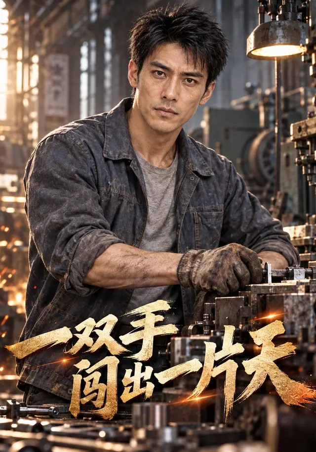
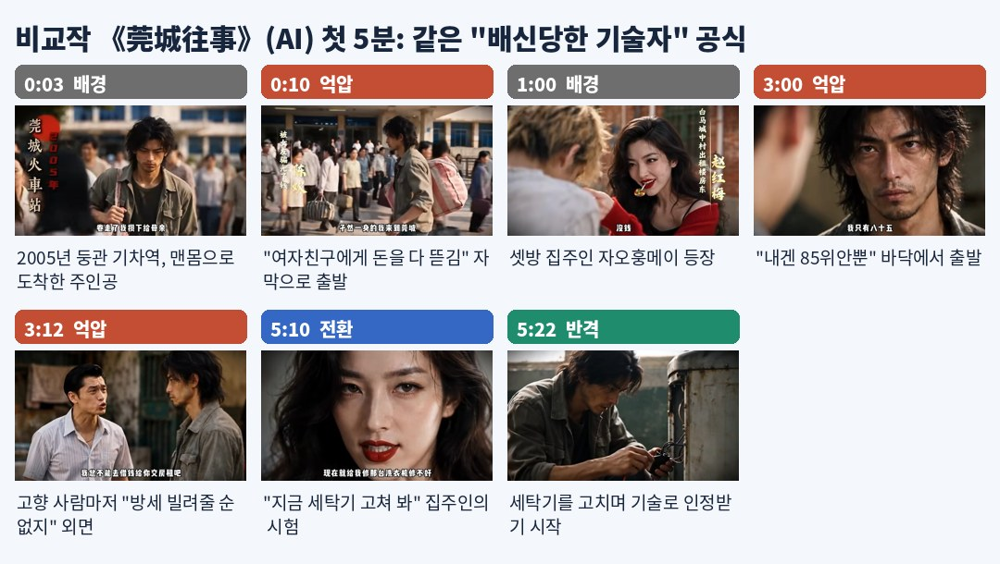
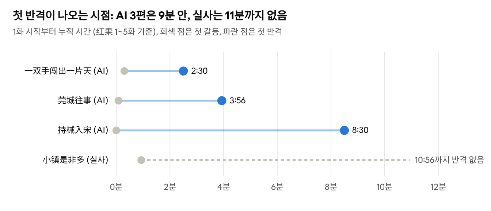
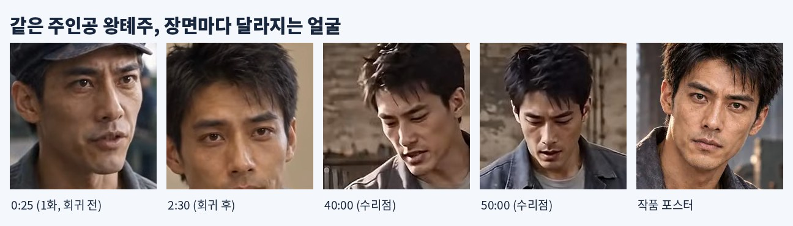
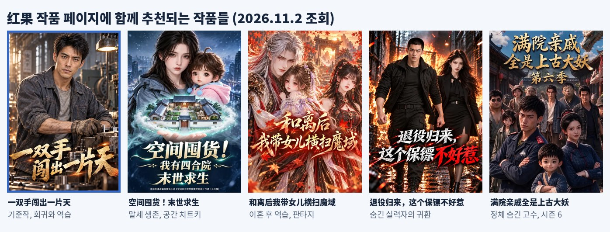

온라인 전시 · 중국미디어문화의이해 3조
사람들은 왜 AI 숏드라마에 열광하는가?
중국 AI 숏드라마의 인기 요인과 문화적 의미



‘AI 생성’ 표시가 붙어 있어도, 사람들은 본다
화면 아래에는 늘 ‘作品由AI生成(AI로 생성된 작품)’이 떠 있고, 등장인물의 얼굴도 서로 비슷해 보입니다. 그런데도 AI 숏드라마는 많은 시청자를 모읍니다. 우리 조는 이 현상에서 출발했습니다.
표시가 있어도, 얼굴이 닮아도 본다
‘AI 생성(作品由AI生成)’ 표시가 붙어 있고 등장인물의 얼굴도 서로 비슷해 보이지만, AI 숏드라마는 여전히 많은 시청자를 모읍니다.
실사와 같은 순위표에서 경쟁한다
실사 숏드라마와 AI 숏드라마가 같은 플랫폼(红果短剧) 순위에서 경쟁하고, AI 작품이 상위권을 차지합니다.
숫자로 본 규모
순위표에서 직접 확인한 것
- 2026년 4월 红果는 실사와 AI 작품을 같은 순위표에 올렸고, 직후 AI작 《菩提临世真人AI版》이 1위에 올랐습니다. (蓝鲸财经)
- 红果 웹 통합 热播榜(10월 23일 갱신본)에서 기준작 《一双手闯出一片天》은 18위(열도 5,942만)였고, 같은 표 상위 20편 안에 持械入宋, 大唐憨婿 같은 AI작이 실사작과 섞여 있었습니다. (红果热播榜)
- 최근 반년 동안 红果 총 열도 상위 10위에 들어간 실사작은 《十八岁太奶奶驾到 5》 하나뿐이었다는 보도가 있습니다. (澎湃, 2026.11.9)
열도(热度)는 조회수가 아니고 날마다 바뀌는 값이라, 이 전시의 모든 지표는 조회 날짜를 함께 적었습니다.


인기 AI 숏드라마의 매력은 어디에 있을까?
연구 주제: 사람들은 왜 AI 숏드라마에 열광하는가? 중국 AI 숏드라마의 인기 요인과 문화적 의미
인기 AI 숏드라마의 서사, 시각적 특징은 어떻게 나타나며 실사와 무엇이 다른가?
그 특징은 시청자의 정서적 만족과 새로운 관람 경험에 어떤 의미인가?
인기 AI 숏드라마는 기존 숏폼의 정서적 만족을 계승하면서, AI가 구현하는 새로운 시각적 경험을 결합한다.
지난 발표의 한계를 어떻게 보완했는가?
빠른 갈등 + 즉각적 보상
- 인기 요인을 넓게 나열
- 실사 숏드라마와 공통된 특징
- 실제 작품, 시청 근거가 부족
구체적 작품 + 비교 + 해석
- 《一双手闯出一片天》 중심 분석
- 《莞城往事》, 실사작과 비교
- 《持械入宋》으로 AI 볼거리 검토
막연한 인기 설명 → 장면과 자료가 뒷받침하는 하나의 주장
지금까지는 흔하게 결론 및 생각해 볼 수 있는 정도이고 결론이 넓게 나올 가능성이 있다. 구체적인 작품을 선정해서 보충할 필요가 있다.
2주차(Task 2) 교수님 피드백 · 3주차 연구의 출발점
연구의 흐름 (발표 3회)
- 1주차 (11.2) Mission 1 주제 발표
질문 설정, 연구 중점 3가지 (획일화, AI의 변화, 시청 이유) - 2주차 (11.9) Task 2 연구 구상
연구 문제 2개와 잠정적 주장 확정 - 3주차 (11.16) Mission 3 연구의 논거
기준작 + 비교작으로 근거 ①②③ 연결
이 전시를 읽는 방법
교수님의 논증 형식은 자료 → 해석 → 논거 → 주장입니다. 근거는 세 갈래로 찾고 서로 연결합니다. 장면을 캡처하거나 논문을 찾은 것은 아직 자료이고, 그것이 주장을 어떻게 받치는지 설명해야 논거가 됩니다.
분석 축 4개 (연구 문제 ①)
《一双手闯出一片天》: 2분 안에 갈등을 압축하다
교수님 피드백대로 작품 하나를 기준점으로 고정했습니다. 다른 작품과 자료는 모두 이 작품을 설명하거나 비교하는 근거로 씁니다.
첫 30초 안에: 끊어지기 직전의 와이어와 곧바로 터지는 갈등, 이름과 직함 자막으로 끝내는 인물 소개, 화면 하단 고정 문구 ‘作品由AI生成’.출처: 红果短剧 / 一双手闯出一片天 · 영상: YouTube 합본(KK爱看) 도입부 30초 클립
一双手闯出一片天
두 손으로 일군 세상 (팀의 한국어 의역) · 红果短剧 · AI 실사풍(仿真人) · 126화
줄거리. 하이청 제1기계공장의 고급 선반공(钳工) 왕톄주(王铁柱)는 남을 챙기다 기회를 번번이 양보합니다. 회귀 후 더는 기다리지 않고 허름한 수리점에서 창업합니다.
선정 이유: 선정 당시 红果 AI剧 인기 1위, 전체 숏드라마 5위 무렵 (조원 캡처 기준). 1화(115초) 안에 갈등, 사고, 죽음, 회귀가 모두 나오고 2화에서 첫 반격이 시작됩니다.
| 기본 정보 | 2026.11.2 조회 | 2026.11.9 조회 |
|---|---|---|
| 순위 표기 | AI剧热播榜 9위 | 표기 없음 |
| 열도(热度) | 5,915만 | 4,873만 |
| 평점 | 7.1 | 7.5 |
| 좋아요 | 156.5만 | 187.7만 |
| 저장 | 41.9만 | 51.4만 |
| 회차 | 126화 | 126화 |
출처: 红果短剧 작품 페이지. 수치는 조회일마다 바뀝니다.
- AI 표기: 모든 화면 하단에 “作品由AI生成，虚构演绎，仅供娱乐，请勿代入现实”(AI 생성, 허구, 오락용)이 고정돼 있습니다.
- 시대 배경: 직급 추천 명단(晋升推荐名额), 고급 선반공 같은 국영 공장 체제가 나옵니다. 정확한 연도는 화면에 나오지 않습니다.
- 분량: 红果 공식 플레이어 기준 1~5화 길이는 116, 86, 114, 61, 58초(평균 약 87초)입니다. YouTube 합본은 회차마다 앞뒤를 잘라 이어 붙여 실제보다 짧으므로 길이 근거로 쓰지 않습니다.
세 수치 모두 红果 공식 플레이어 기준 (2026.11.9 팀 확인).
1화 첫 2분 30초: 억압에서 회귀, 반격까지
장면 시간은 YouTube 합본 기준입니다 (红果 공식 플레이어보다 10~20초 이릅니다. 예: 회귀 장면은 红果 1:49, YouTube 1:30). 출처: 红果短剧 / 一双手闯出一片天, YouTube 합본 화면 캡처.
배신 → 회귀 → 기회를 되찾는 선택. “노동, 기술로 인정받고 싶은 욕망”을 짧은 서사에 응축합니다.
설명 없이 2분 안에 억압, 전환, 반격의 한 바퀴가 완결됩니다. 시청자는 짧은 시간에 정서적 보상 한 단위를 받습니다. 억압의 가해자가 아내와 친구, 곧 가장 가까운 사람이라는 점도 눈에 띕니다. 아내는 가슴을 다친 남편보다 다리를 다친 친구를 먼저 챙깁니다.
1화 초반 3분 장면 기록 전체 보기 (YouTube 합본 시간 기준)
| 시간 | 장면과 자막 | 서사 기능 |
|---|---|---|
| 0:00 | 공장, 크레인에 매달린 감속기 | 배경 제시(설명 없음) |
| 0:08 | 마즈창(马志强) 이름 자막, “일단 감속기부터 옮기고 교체하자” | 갈등 발생 |
| 0:16 | 스승 류서우이(刘守义) “톄주가 쓸 수 없다고 했어” | 주인공의 전문성 제시 |
| 0:20~0:24 | “작업 반 시간 늦어져도 안 죽어” / “사고 나면 내가 책임진다” | 갈등 심화 |
| 0:36~0:40 | 와이어가 끊어짐, “조심해!” | 사고 |
| 0:48~0:56 | 아내 쉬시우쥐안(许秀娟)이 다리 다친 마즈창을 돌봄, 피 흘리는 톄주는 “시우쥐안”을 부름 | 주인공 억압(배신) |
| 1:04~1:20 | “톄주는 가슴을 다쳤어” / “즈창은 다리잖아”, 마즈창을 먼저 차에 태움 | 억압 극대화 |
| 1:28~1:32 | 톄주의 죽음, “十五年前(15년 전)”, 약혼 식사 자리 | 회귀(전환) |
| 1:41~1:46 | 시우쥐안 “네 진급 추천 자리 말인데” | 전생의 양보 상황 재현 |
| 2:01~2:40 | “어차피 고급 선반공이잖아” → 톄주 “지금 내게 가장 필요한 건 기회야”, “이제야 내 차례야” | 첫 반격(양보 거부) |
| 2:46 | “고작 조장 자리잖아” | 다음 갈등 예고 |
4~6초 간격으로 직접 확인한 기록입니다. 이 표의 시간은 YouTube 합본 기준이라 위의 수치 카드(红果 기준)와 10~20초 차이가 납니다.
공간의 변화: 공장과 가정에서 수리점으로
시간은 YouTube 합본 기준. 출처: 红果短剧 / 一双手闯出一片天, YouTube 합본 화면 캡처.
공장에서 수리점으로의 공간 이동은 “남을 위해 양보하던 사람”이 “자기 기술로 서는 사람”으로 바뀌는 보상을 눈에 보이게 합니다.
전체 흐름
합본 시간대별 표본 확인 (YouTube 합본 기준)
- 0~5분 전생의 죽음과 회귀, 양보 거부
- 5~20분 마즈창, 아내와의 갈등이 공장과 가정에서 반복
- 20분 무렵 공장을 떠남
- 40분 이후 수리점(修配铺)에서 부품 가공, 도면 검토 등 기술로 인정받는 과정
이 작품만의 특징
- 보상의 종류가 “복수”보다 “기술과 성실”입니다. 자막에 “내가 기술이 좋으니까”, “자기가 만든 건 끝까지 봐야지” 같은 대사가 반복됩니다.
- 억압의 가해자가 가족과 친구입니다. 南方都市报가 인기 AI 만화극 100편에서 찾은 “절반 가까이가 가까운 사람에게 상처받으며 시작”과 같은 패턴입니다.
- 사이다가 절제돼 있습니다. 시청자 댓글에 “주인공이 다 용서한다”, “돈을 성실하게 번다”, “주인공을 버린 연인이 벌을 안 받는다”는 반응이 있습니다. 극단적 복수극과 다른 지점입니다. 시청자 반응 · 보조 근거
서사는 반복된다. 반격의 배치는 어떻게 다른가?
비교작은 기준작과 제작 방식(AI/실사)과 소재 중 하나만 다른 작품으로 골랐습니다. 모두 红果 순위에 오른 작품입니다. 무엇을 비교하려는지 분명해야 결론이 좁아집니다.
지표는 2026.11.9 조회. 실사 작품(小镇是非多, 十八岁太奶奶驾到)은 실존 배우가 나오므로 얼굴 사진을 싣지 않고 텍스트와 데이터로만 비교합니다. 작품명의 한국어는 팀의 의역입니다.
왜 이 조합인가
제작 방식과 장르가 같고, 주인공이 “배신당한 기술자”라는 점도 같습니다. 두 작품이 닮아 있을수록 “AI가 검증된 공식을 반복 생산한다”는 주장이 구체화됩니다.
소재와 정서(배신, 성실한 재기)가 같고 제작 방식만 다릅니다. 여기서 나오는 차이가 곧 “AI 숏드라마만의 특징”입니다. 교수님 피드백에 가장 직접적으로 답하는 비교입니다.
AI가 공식을 반복할 뿐 아니라 새로운 볼거리도 만든다는 반대 방향의 근거입니다. 주장을 균형 있게 만들어 줍니다.
최근 반년 동안 红果 총 열도 상위 10위에 들어간 유일한 실사작이라는 보도가 있습니다. 실사가 경쟁력을 갖는 조건을 보여 줍니다. (澎湃, 2026.11.9)
《莞城往事》: 배신 → 기회 → 기술로 인정
2005년 둥관 기차역에 맨몸으로 도착한 주인공 천환. 여자친구에게 돈을 뜯기고 85위안만 남았습니다. 고향 사람마저 외면하지만, 집주인의 시험(“지금 세탁기 고쳐 봐”)을 통과하며 기술로 인정받기 시작합니다.
“배신당한 기술자가 자신의 능력으로 다시 일어선다”
다른 점은 회귀 대신 귀인(집주인)이 전환 장치라는 것입니다.

첫 반격이 나오는 시점: AI 3편은 9분 안, 실사는 11분까지 없음
1~5화 초반부 관찰 결과 · 红果 공식 플레이어 1화 시작부터의 누적 시간 · 2026.11.9 팀 확인
점에 마우스를 올리거나 눌러 보면 장면 설명이 나옵니다. 같은 데이터는 아래 비교 기록표에 있습니다.
길이는 차이가 아니다: AI 87~117초, 실사 129~131초
1~5화 한 화 길이(초) · 점 하나가 한 회차, 세로 막대가 평균 · 红果 공식 플레이어 기준
차이는 “짧아서”보다 “갈등과 보상을 어디에 놓느냐”에서 나옵니다.
회차 끝 갈고리(钩子): AI는 대결·위기로, 실사는 여운으로
1~5화 마지막 장면의 유형 · 관찰 결과
비교 기록표
각 작품 1~5화를 红果 공식 플레이어에서 직접 확인 (2026.11.9). 표가 넓으면 옆으로 밀어 보세요.
반전 횟수, 钩子 유형, 얼굴 유사도, 실사로 찍기 어려운 장면 수는 각 화를 여러 지점에서 확인한 팀의 관찰 결과이며 측정값이 아닙니다. 시간은 红果 공식 플레이어 기준입니다. YouTube 합본은 회차마다 앞뒤가 잘려 있어 시간이 10~20초씩 앞당겨집니다(예: 一双手의 회귀 장면은 红果 1:49, YouTube 1:30).
표에서 읽히는 점
AI 3편은 첫 갈등이 0~18초 안에 나오고, 첫 반격이 누적 2분 30초~8분 30초 안에 옵니다. 같은 배신 서사의 실사작 小镇是非多는 첫 갈등이 약 56초이고 5화(약 11분)까지 반격이 없습니다.
한 화 길이는 AI 작품(평균 87~117초)과 실사(131초)가 크게 다르지 않습니다. 실사 1위 十八岁太奶奶驾到 5도 1~5화 평균 약 130초(173, 103, 157, 90, 124초)입니다.
AI 작품은 회차 끝을 대결이나 위기로 끊고, 실사작은 인물의 표정과 여운으로 끊는 경우가 많습니다.
一双手와 莞城往事는 “배신당한 기술자의 창업 역전”이라는 같은 공식을 반복하고, 持械入宋은 실사로 찍기 어려운 볼거리를 넓힙니다.
업계와 연구가 이미 확인한 서사 공식
南方都市报 빅데이터연구원이 2026년 4월 红果 인기 AI 만화극 100편을 분석한 결과, 90% 이상이 “压抑-开挂-打脸(억압, 치트키, 복수)” 3단 구조였습니다. 회귀와 타임슬립이 가장 흔한 출발 장치였습니다.
숏드라마 대본은 회당 약 500자, 매 회가 한 단락을 끝내고 다음 화로 넘기는 钩子(갈고리)를 남기는 것이 기본입니다. 유료 결제 지점은 보통 10, 20, 30화입니다.
한 편이 뜨면 따라 만든 작품 수십 편이 나오며 시청자의 “사이다 내성”이 올라갑니다. 그 결과 “10초마다 반전”이 강제되고 1.5배속, 2배속 시청이 일상이 됐다는 분석입니다.

← 옆으로 밀어 보기 →
data/comparison.json)로 다시 그린 것입니다.팀 제작재벌도 신선도 아닌, 공장의 선반공
기준작의 무대는 국영 기계공장, 주인공은 선반공입니다. 진급 추천, 수리점 창업처럼 평범한 노동자의 이야기입니다. 이런 소재는 기준작만의 것일까요?
- AI 실사풍 드라마의 주력 소재. 2026년 9월 红果 AI真人剧榜 상위 20편을 보면, 현대 도시, 1980~90년대, 농촌이 주력이고 중장년 시청자를 겨냥합니다. 남성향 작품은 《1992，我不做养子了》, 《重回82》, 《重回98》처럼 “그 시대로 회귀해 가족을 부자로 만드는” 이야기가 많습니다. (塔猴, 2026.9.8)
- 연대극의 정서. 연대극은 윗세대에게는 집단 기억, 중간 세대에게는 정서적 치유와 현실 반영으로 소비된다는 제작사 인터뷰가 있습니다. (人民日报海外版/光明网, 2026.3.20)
- 평범한 직업 주인공. 수도전기 기사, 직장인, 창업자가 주인공인 “현실 직업극”이 늘고 있으며, 红果 AI 창작 프로그램이 어떤 소재든 최소 수익을 보장해 틈새 소재 제작을 부추긴다는 분석입니다. (新浪, 2026.11.5)
- 같은 계열이 순위에 반복된다. 11.9 AI剧 상위 20편만 봐도 《莞城往事》, 《猎王的养家路》, 《破产返乡：我靠赶山养女逆袭》 등이 “회귀 + 연대 + 남성 노동자/가장” 계열입니다. (红果 AI剧热播榜)
누가 보는가: 红果 이용자 연령
출처: CSM 분석, 网易. 이용자 절반 이상이 45세 이상입니다.
하위 도시 시청자는 대부분 40대 이상이며 감정적 울림을 가장 중시한다는 업계 인터뷰도 있습니다. (Caixin, 2026.6.1)

기준작이 주는 보상은 막연한 “사이다”가 아니라 노동, 기술, 세대 기억, 다시 사는 인생이라는 구체적인 종류입니다. 중장년 이용자가 많은 플랫폼에서 이 소재는 공감의 통로가 됩니다.
비슷한 얼굴, 그래도 본다
기준작의 남녀 주인공은 모두 전형적인 미형 얼굴입니다. 다른 AI 작품의 주인공들과 나란히 놓으면 매끈한 피부, 또렷한 이목구비의 비슷한 얼굴로 모입니다.


얼굴 유사도 관찰 결과 · 팀 판단
| 一双手 AI | 상매끈한 미남미녀형, 같은 인물도 장면마다 얼굴이 바뀜 |
|---|---|
| 莞城往事 AI | 중상주인공은 개성 있는 장발, 조연 얼굴이 장면마다 흔들림 |
| 持械入宋 AI | 상대원들의 이목구비가 서로 비슷한 미남형 |
| 小镇是非多 실사 | 하실제 배우, 평범한 생활형 외모 (사진 미수록) |
红果, AI 인물 창작 규범 공고 (2026.7.22)
서로 다른 작품, 다른 인물에 고도로 비슷한 외모를 쓰지 말라.
「关于规范AI剧角色创作的公告」(AI극 인물 창작 규범에 관한 공고) 취지 · 사용자의 심미적 피로를 막기 위해 “고빈도 AI 얼굴” 재사용을 특별 단속 · IT之家, 2026.7.23
기술적 원인. 바이트댄스 모델팀 관계자는 “모호한 프롬프트는 표준화된, 서로 비슷한 결과물을 낸다”고 말합니다. (Caixin, 2026.6.1)
시청자 반응의 양면 보조 근거
“배우보다 예쁘다, 실사 웹드라마보다 낫다”
“얼굴이 다 똑같다, 눈빛이 비었다”
출처: 新浪娱乐, 2026.7.11. 기준작 비교작 莞城往事 댓글에는 후반부에 주인공 얼굴이 바뀐다는 지적도 있습니다.
인간과 거의 같은 인공 얼굴은 오히려 거부감을 준다는 “불쾌한 골짜기”(Mori, 1970)가 있는데도 상위권을 유지한다면, 시청자가 얼굴의 어색함보다 이야기 보상을 더 크게 여긴다는 해석이 가능합니다.
《持械入宋》: 실사에서 부담 큰 장면을 AI로 구현
현대 특수부대 5명이 무기를 들고 송나라로 시간여행을 떠나는 이야기. 첫 장면부터 장갑차가 절벽으로 떨어집니다.
시간은 YouTube 합본 기준. 출처: 红果短剧 / 持械入宋 第一季, YouTube 합본 화면 캡처.

← 옆으로 밀어 보기 →
실사로 찍기 어려운 장면 수 (1~5화) 관찰 결과
| 持械入宋 AI | 4 이상장갑차 추락, 시간이동, 맹수, 활 공격 |
|---|---|
| 莞城往事 AI | 1~22005년 기차역 군중 |
| 一双手 AI | 1크레인 낙하 사고 |
| 小镇是非多 실사 | 0 |
기준작도 크레인 와이어가 끊어지는 사고, 대규모 공장 세트, 피 흘리는 부상 장면을 첫 1분에 넣었습니다. 실사라면 세트와 특수효과 비용이 드는 장면입니다.
AI의 강점은 하늘에서 신선 둘이 싸우는 장면이지, 농촌 집 앞에서 사람들이 싸우는 장면이 아니다.
왕환(王欢), 周图文化 대표 · Sixth Tone, 2026.8.24
- AI 오프닝 한 컷은 30분 이내였고, 와이어 액션은 최소 반나절이 걸렸다는 감독 증언이 있습니다. (Sixth Tone, 2026.8.24)
- AI는 현환, SF, 선협, 말세처럼 실사로는 비용과 위험이 큰 장르를 채웠습니다. (爱范儿/腾讯新闻, 2026.8.4)
- 持械入宋은 대규모 전투 장면으로 “AI 숏드라마의 천장”이라는 평을 듣습니다. (新榜/虎嗅, 2026.10.28)
- 持械入宋 총감독 허시우산(何秀山): AI 배우의 입모양과 표정은 실사보다 조금 부족하지만, 시청자가 공감하면 받아들여진다. (21财经, 2026.11.8)
AI의 차별성은 “더 빠른 전개”뿐 아니라, 저예산으로도 표현 가능한 장면의 범위를 넓히는 데 있다.
직접 보기: 장면 클립
앞에서 본 장면을 영상으로 확인해 보세요. 기준작은 YouTube 합본의 해당 구간만 골라 재생하고, 비교작은 장면 스틸과 红果 공식 페이지로 연결합니다.
시청 동기와 서사적 만족을 외부 자료로 검증
작품에서 본 특징이 우리의 개인적 감상이 아님을 보여 주는 자료입니다.
‘소원 성취(遂愿)’
司若, 高祎伟 (2026), 인기 숏드라마 100편의 내용 분석. 고밀도 갈등, 갑작스러운 반전이 정서적 보상과 현실 보상의 욕망을 자극합니다.
사건 6유형과 인물 7유형의 조합이 “소원 성취” 중심의 정서적 만족을 만든다. 급반전, 촘촘한 갈등, 극단적 인물, 파편적 시청이 특징이고, 카타르시스, 집중, 자아실현, 현실 결핍의 보상 욕구를 채운다.
「微短剧如何生产情绪价值: 基于"遂愿"机制的原型叙事研究」. 《全球传媒学刊》 13(3), 3–19, 2026.6.11 · 초록
308명 AI 숏드라마 시청 설문
출처: 《半岛晨报》, 다롄외국어대 2026.5.25 (n=308, 비확률표본)
기존 서사의 정서적 보상과 AI 기술에 대한 새로운 호기심이 동시에 작용할 수 있다.
인기 AI 만화극 100편 중 억압 → 기회, 능력 획득 → 반격 구조가 반복됨. 절반 가까이는 가까운 가족이나 친구에게 상처받으며 시작했고, 기사는 이를 “이름과 직업만 바꾸면 되는 빈칸 채우기”라고 표현합니다.
같은 날 인기 순위 1위와 9위가 줄거리가 거의 같은 두 편(《菩提临世》 계열)이었고, 인물 이름까지 같은 작품도 10편 이상 발견됐습니다.
비현실적 장면의 구현
일상적인 대화보다 신선들의 전투처럼 실사 촬영의 제약이 큰 장면에서 AI의 강점이 두드러진다는 설명. 검증된 히트작의 저예산 리메이크에 집중한다고 밝혔습니다.
周图文化 왕환 · Sixth Tone, 2026.8.24
기존 이야기 공식의 반복 + AI가 확장한 표현 가능성
이론과 전문가 논거
해석(연구 문제 ②)의 뼈대는 司若 외(2026)의 “소원 성취” 메커니즘입니다. 이 밖의 이론은 반복이 쾌락이자 표준화라는 양면을 읽는 데 씁니다.
| 근거 | 핵심 내용 | 받쳐 주는 주장 |
|---|---|---|
| 司若, 高祎伟 (2026). 《全球传媒学刊》 13(3) | 인기 숏드라마 100편 내용분석. 사건 6유형과 인물 7유형의 조합이 “소원 성취” 중심의 정서적 만족을 만든다 | 연구 문제 ①②. 주장의 학술적 뼈대 |
| Hu, R. & Li, Y. (2026). Bingeing on daydreams. Global Media and China | 셴양시(咸阳) 시청자 24명 경험표집, 인터뷰, 댓글 4,189개 분석. 시청자는 “상향 이동을 꿈꾸는 드리머”, “쾌락 추구자” 등 4유형. 숏드라마를 “매운 과자”처럼 싸고 가벼운 스트레스 해소로 쓴다 | 정서적 대리만족 (시청자 쪽 보조 근거) |
| 김윤희 (2026). 《대중서사연구》 32(3) | 회귀 서사의 관습(선악 구도, 유능한 주인공, 성공만 보여 주는 닫힌 결말)은 대리만족을 주지만 사회적 모순을 가릴 수 있다. 에코의 “위안의 장치” 개념 | 기준작의 회귀 구조 해석 |
| Cawelti (1976). Adventure, Mystery, and Romance | 공식 서사는 예측 가능성에서 오는 안정감과 현실 도피를 동시에 준다. 표준화와 약간의 변주가 함께 있어야 사랑받는다 | “검증된 공식”이 지루함이 아니라 쾌락이 되는 이유 |
| Adorno & Horkheimer (1947). 「문화산업」 | 문화산업은 표준화된 상품을 대량 생산하고, 제목과 얼굴만 바꾼 “사이비 개성”으로 차이를 연출한다 | AI가 획일화를 심화한다는 비판적 해석 |
| Zillmann (1988). Mood management theory | 사람들은 지루함과 스트레스를 해소하도록 미디어를 선택한다 | 즉각적 자극의 기능 |
| Katz, Blumler & Gurevitch (1974). Uses and gratifications | 수용자는 목적을 갖고 매체를 골라 욕구를 채운다 | “왜 보는가”를 설명하는 기본 틀 |
| 간헐적 강화(Skinner), 자이가르닉 효과(1927) | 불확실한 보상과 끝나지 않은 이야기가 다음 화를 보게 만든다. 중국 언론이 심리상담사를 인용해 AI 숏드라마 중독성을 이렇게 설명 | 회차 끝 钩子와 1~2분 단위 보상 |
| Mori (1970). 불쾌한 골짜기 | 인간과 거의 같은 인공 얼굴은 오히려 거부감을 준다 | 반론: 그런데도 본다는 것은 얼굴보다 이야기 보상이 크다는 뜻 |
전문가와 업계 발언
AI 배우의 입모양과 표정은 실사보다 조금 부족하지만, 시청자가 공감하면 받아들여진다.
허시우산(何秀山), 持械入宋 총감독 · 21财经 2026.11.8
AI가 제작비를 낮출수록 좋은 이야기와 연출 아이디어가 결정적이 된다.
탕지리(唐季礼), 홍콩 감독, 베이징국제영화제 AIGC 심사위원장 · 21财经 2026.11.8
정품화가 숏드라마의 존립 기반이다.
허비아오(何飚), 국가광보총국 부국장 (2026.11.5 포럼) · 21财经 2026.11.8
AI의 강점은 하늘의 신선 싸움이지 농촌 집 앞 다툼이 아니다.
왕환(王欢), 周图文化 대표 · Sixth Tone 2026.8.24
숏드라마는 빠르고 감정적으로 퍼지기 때문에 진심이 담길수록 넓게 전해진다.
탕융화(汤拥华), 화둥사범대 중문과 교수 · 中国城市报 2026.4.27
갈고리와 爽点이 약하면 대본을 거의 다시 쓴다.
원루(温儒), 숏드라마 작가 · 新榜/钛媒体
발언은 출처 기사의 취지를 옮긴 것입니다. 고전 이론(Cawelti, Adorno와 Horkheimer, Zillmann, Katz 외, Mori)은 원전 서지 정보만 적었습니다.
AI는 제작을 확장하지만 흥행을 보장하지는 않는다
제작 문턱 하락
제작비와 시간이 줄어들어 다양한 장르를 시도할 여지가 커졌습니다.
- 제작비: 실사 30~40만 위안, 스태프 약 40명 → AI 10만 위안 미만(2만 위안 미만도), 10명 미만 (Caixin)
- 제작 기간: 수개월 → 7~15일 (21财经) / 실사 1~3개월 → AI 20~30일 (蓝鲸财经)
- 외주 단가: 분당 800~1,000위안 → 약 200위안 (Caixin)
대량 생산 ≠ 인기
일부 흥행작의 성과만으로 전체 시청 선호를 판단하긴 어렵습니다.
- 2026년 1분기 히트율 0.1% 미만 (21财经 2026.11.8)
- 2025년 만화극 6만 편 중 1억 뷰 돌파 96편(0.16%) (蓝鲸财经, DataEye)
“속도보다 품질”
제작 편수를 줄이고 대본과 영상 완성도에 집중하는 흐름입니다.
- “정품화가 숏드라마의 존립 기반” (허비아오, 국가광보총국 부국장)
- “제작비가 낮을수록 좋은 이야기와 연출 아이디어가 결정적” (탕지리 감독)
“AI가 실사보다 인기”가 아니라 “어떤 AI 작품이 왜 선택받는가”를 묻는다.
플랫폼과 산업 데이터
| 항목 | 수치 | 출처 |
|---|---|---|
| 红果 일간 이용자(DAU) | 1.68억 명 (2026.7, 전년 대비 +107%), 아이치이, 텐센트비디오, 유쿠, 망고TV 합보다 많음 | 中新社/21财经, 2026.11.8 (QuestMobile 인용) |
| 红果 월간 이용자(MAU) | 3.57억 명 | 西南证券 2026 Q4 전략 |
| 红果 1인 하루 이용 시간 | 151분 (2026 3분기) | 21财经, 2026.11.8 |
| 중국 숏드라마 이용자 | 8.51억 명 (2026.5) | Sixth Tone, 西南证券 |
| 시장 규모 전망 (2026) | 숏드라마 전체 1,210억 위안, 그중 AI 드라마와 만화극 400억 위안 이상 | 西南证券 |
| 신규 작품 수와 AI 비중 | 2026 1분기 약 12.8만 편 중 95% 이상 AI, 2분기는 64% | Sixth Tone, 2026.8.24 (중국네트워크시청협회 자료) |
| 히트율 | 2026 1분기 0.1% 미만 / 2025년 만화극 6만 편 중 1억 뷰 돌파 96편(0.16%) | 21财经 2026.11.8 / 蓝鲸财经 (DataEye) |
| 제작비 | 실사 30~40만 위안, 스태프 약 40명 → AI 10만 위안 미만(2만 위안 미만도), 10명 미만 | Caixin, 2026.6.1 |
| 제작 기간 | 수개월 → 7~15일 / 실사 1~3개월 → AI 20~30일 | 21财经 2026.11.8 / 蓝鲸财经 |
| 외주 단가 | 분당 800~1,000위안 → 약 200위안 (연산비 수준) | Caixin |
红果는 실사극, AI극, 만화극(漫剧)을 따로 분류하고, 시장 통계는 두 AI 유형을 합치는 경우가 많습니다. 수치는 원 출처가 밝혀진 것만 썼습니다.
규제와 플랫폼 대응
- 2026.10.21红果, 휴식과 수면 알림 추가, 코인 기능 폐지 계획 발표21财经 2026.11.8
- 2026.9.1《微短剧发展管理办法》 시행: AI로 만든 숏드라마는 매 회 잘 보이는 곳에 표시, 금지 내용 11개 항목光明网, 2026.8.2
- 2026.7.22红果, AI 인물 창작 규범 공고: 비슷한 ‘AI 얼굴’ 반복 단속IT之家
- 2026.5 무렵红果, 실사작 최소수익 보장 15억 위안 이상으로 확대(편당 평균 약 60% 증가)界面 Global
- 2026.4.7红果와 더우인, 심사 기준 강화南方都市报
- 2026.4.1광전총국 규정 시행: AI 생성 숏드라마와 만화극 사전 등록, AI 표시 의무南方都市报
- 2026.2바이트댄스 Seedance 2.0 출시(초당 약 1위안), 红果 중소 실사작 보장 축소Sixth Tone, Caixin
- 2025.9.1《人工智能生成合成内容标识办法》 시행: AI 생성물 표시 의무화科技日报
기준작 화면 하단의 “作品由AI生成” 문구는 이 표시 의무에 따른 것입니다. 즉 “AI인 줄 알고도 본다”는 우리 현상은 법적 표시로 보장된 사실입니다.


기준작 댓글의 “전개가 빠르고 그 시대답다”, “성실하게 돈을 번다”. 한편 “보다 보면 뇌가 멍해진다”는 시청자 담론과 중독성 비판도 함께 나타납니다.
이 구조는 한 작품이 아니라 플랫폼 전체에서 대량으로 생산되고 소비되는 흐름입니다. 동시에 획일화에 대한 피로와 규제도 함께 나타나고 있습니다.
예상 반론과 대응
반론 1“빠른 갈등과 보상은 실사 숏드라마도 똑같다”
맞습니다. 그래서 주장을 “AI가 공식을 만들었다”가 아니라 “AI가 기존 공식을 더 싸고, 더 많이, 더 촘촘하게 찍어 낸다”로 좁힙니다. 중국 언론도 “AI가 사이다 우선 작법을 만든 게 아니라 그 길을 넓혔다”고 봅니다. 小镇是非多와의 1:1 비교가 이 차이를 보여 주는 근거입니다.
반론 2“사람들이 보는 건 내용이 아니라 무료, 자동재생, 추천 알고리즘 때문이다”
플랫폼 설계가 시청을 늘리는 것은 사실입니다(자동재생, 맞춤 추천, 출석 보상). 다만 같은 플랫폼에서도 히트율은 0.1% 미만입니다. 즉 플랫폼은 조건이고, 어떤 작품이 뜨는지는 내용이 가릅니다. 플랫폼은 배경으로 두고 분석 대상은 작품 텍스트로 한정합니다.
반론 3“열도(热度)는 조회수도 아니고 매일 바뀐다”
맞습니다. 기준작도 11.2에 5,915만, 11.9에 4,873만으로 변했습니다. 수치는 날짜별 스냅샷으로만 쓰고, “순위에 올랐다”는 사실(통합 热播榜 18위, AI剧热播榜 9위)을 주된 근거로 씁니다.
반론 4“AI 숏드라마 대부분은 망하는데 열광이라 할 수 있나”
히트율 0.1% 미만은 오히려 우리 질문을 날카롭게 합니다. “왜 AI 숏드라마인가”보다 “살아남은 AI 숏드라마는 무엇을 더 잘하는가”를 묻는 것이고, 기준작은 그 살아남은 사례입니다.
반론 5“실사도 아직 1위를 한다(太奶奶 5)”
반대 사례로 인정합니다. 실사는 배우에 대한 애착, 시리즈 IP, 연기의 뉘앙스로 이긴다는 분석이 있습니다. 우리 주장의 범위는 “AI가 실사를 대체한다”가 아니라 “AI는 공식형 보상 구조에 특화돼 있다”입니다.
반론 6“AI 얼굴이 불편하다는 사람도 많다”
红果가 직접 “고빈도 AI 얼굴”을 단속한 것은 이 피로감이 실제로 있다는 뜻입니다. 그런데도 상위권을 유지한다면, 시청자가 얼굴의 어색함보다 이야기 보상을 더 크게 가치 매긴다는 해석이 가능합니다.
연구의 범위와 한계
우리가 다루는 것은 AI 실사풍 드라마(AI仿真人剧)입니다. 红果는 실사극, AI극, 만화극(漫剧)을 따로 분류하고, 시장 통계는 두 AI 유형을 합치는 경우가 많습니다.
기준작 1편과 비교작 4편입니다. 중국 AI 숏드라마 전체로 일반화하지 않고, 南方都市报 100편 분석과 司若 외 100편 분석으로 보완합니다.
중국 보도 중에는 AI가 쓴 기사도 있습니다(예: 新浪 BigNews). 수치는 원 출처(QuestMobile, DataEye, 중국네트워크시청협회)가 밝혀진 것만 씁니다.
자막과 댓글은 중국어 원문을 번역해 쓴 것입니다. 장면 시간, 반전 횟수, 얼굴 유사도 같은 기록은 팀의 관찰 결과입니다.
자료 → 해석 → 논거 → 주장
작품 내부
- 《一双手》: 압축된 갈등, 반격
- 《持械入宋》: AI가 확장한 볼거리
작품 외부
- ‘소원 성취’ 서사 연구
- 시청 동기 조사, 제작진 인터뷰
사회문화적 맥락
- AI 제작의 진입장벽 감소
- 흥행 편중과 완성도 경쟁
AI 숏드라마의 매력은 “익숙한 정서적 보상”과 “새로운 시각적 경험”의 결합에서 찾을 수 있다.
“AI가 실사보다 인기”가 아니라 “어떤 AI 작품이 왜 선택받는가”를 묻습니다.
나에게 어울리는 숏드라마는?
여섯 가지 질문에 답하면, 이 전시에서 다룬 다섯 작품 중 당신의 취향에 맞는 한 편을 골라 드립니다.
재미로 보는 테스트입니다. 결과 설명과 수치는 이 전시의 관찰 결과와 작품 페이지(2026.11.9 조회)를 바탕으로 합니다.
세 번의 발표, 좁혀진 질문
넓은 질문에서 시작해, 피드백을 받아 작품 하나로 좁히고, 근거를 세 갈래로 연결하기까지의 기록입니다.
사람들이 AI 숏드라마에 열광하는 이유
《一双手闯出一片天》으로 본 숏폼 서사의 획일화와 AI 시대의 변화
기존 숏폼 드라마의 서사와 소재 획일화 양상. 선행 자료가 지적한 3단 공식: 억압(무시와 배신) → 전환(신분 공개, 회귀, 치트키) → 반격(복수와 ‘사이다’ 역전)
AI 숏드라마에서의 획일화 심화 또는 변화. 제작, 서사 구조, 인물, 장르, 제작 방식의 다섯 축으로 비교
AI 숏드라마 시청 이유. 정서적 보상, 접근성, 볼거리, 세대와 소재. “사람들은 ‘AI라서’ 보는가, 익숙한 이야기 때문에 보는가?”
AI 숏드라마는 숏폼의 공식을 반복하는가, 바꾸는가? 그리고 사람들은 그 안에서 무엇을 소비하는가?
1주차 발표는 별도 슬라이드 도구로 만들어 이미지 원본이 없어 텍스트로 정리했습니다. 당시 인용한 수치 중 원 출처가 확인되지 않은 일부는 이후 검증을 거쳐 이 전시에서 제외했습니다.
본 조는 AI로 생성되었습니다
한양대학교 「중국미디어문화의이해」 3조. 연구 문제와 핵심 주장은 함께 정했습니다.
함께 진행: 연구 문제 및 핵심 주장 선정
출처
작품과 플랫폼 (1차 자료)
학술 논문
- 司若, 高祎伟 (2026). 微短剧如何生产情绪价值. 全球传媒学刊 13(3)
- Hu & Li (2026). Bingeing on daydreams. Global Media and China
- 김윤희 (2026). 웹소설 회귀 구조의 ‘위안의 장치’ 비틀기. 대중서사연구 32(3)
- 全球传媒学刊 13(3) 목차
- Cawelti, J. G. (1976). Adventure, Mystery, and Romance. Univ. of Chicago Press
- Adorno & Horkheimer (1947). 「문화산업: 대중 기만으로서의 계몽」, 《계몽의 변증법》
- Zillmann (1988). Mood management theory · Katz, Blumler & Gurevitch (1974). Uses and gratifications · Mori (1970). 불쾌한 골짜기 · Zeigarnik (1927)
기사와 보고서
- 南方都市报, 百部漫剧题材相似 (2026.4.28)
- 中新社/21财经, AI短剧“勾”住你了吗 (2026.11.8)
- 21财经, 从“真人”到“漫人” (2026.7.15)
- Sixth Tone, China's Short-Drama Boom Was Built on Speed (2026.8.24)
- Caixin Global, How AI Took Over China's Micro-Drama Industry in 90 Days (2026.6.1)
- Jiemian Global, China's short-video apps want more real people
- 澎湃, 真人短剧，不必画地为牢 (2026.11.9)
- 新榜/虎嗅, 持械入宋 분석 (2026.10.28)
- 塔猴, 2026年9月红果三大榜单TOP20 (2026.9.8)
- 西南证券, 传媒行业2026年Q4投资策略
- 蓝鲸财经, AI短剧 히트율과 순위 통합
- 新浪, 从水电工到修仙者 (2026.11.5)
- 新浪娱乐, 观众对AI短剧和真人剧的情感体验 (2026.7.11)
- 爱范儿/腾讯新闻, AI短剧女主接广 (2026.8.4)
- 新榜/钛媒体, 短剧编剧 작법 (2024.2.28)
- 扬子晚报, 倍速播放与爽点内卷 (2025.11)
- 网易, 十八岁太奶奶와 红果 이용자 연령
- 光明网, 年代剧何以打动老中青三代人 (2026.3.20)
- 中国城市报, 家里家外 (2026.4.27)
- IT之家, 红果 高频AI脸 治理 (2026.7.23)
- 光明网, 微短剧发展管理办法 (2026.8.2)
- 科技日报, AI生成合成内容标识办法 시행 (2025.9.1)
- 《半岛晨报》, 다롄외국어대 AI 숏드라마 시청 설문 (2026.5.25, n=308, 비확률표본)
이미지와 영상
- 작품 화면과 포스터: 출처 红果短剧 / 각 작품명 (포스터는 작품 페이지 공식 포스터, 2026.11.2 및 11.9 조회)
- 장면 프레임: 각 작품 YouTube 합본 영상의 해당 시간 캡처. 시간은 YouTube 합본 기준(红果 공식 플레이어보다 10~20초 이름)
- 기준작 30초 영상: YouTube 합본 도입부 30초 클립 · 상영관의 영상 클립은 같은 YouTube 합본(KK爱看)의 해당 구간을 임베드 재생
- 자료 1~9: 팀 제작 (작품 화면 캡처를 조합)
- 헝뎬 영화촬영소 사진: Whisper of the heart, Wikimedia Commons, CC BY-SA 4.0
- 베이징 지하철 사진: N509FZ, Wikimedia Commons, CC BY-SA 4.0
- 발표 슬라이드: 3조 팀 발표자료 (Task 2, Mission 3)
차트 원본 데이터: data/comparison.json (红果 공식 웹 플레이어에서 각 작품 1~5화를 직접 확인, 2026.11.9). 시청자 댓글과 반응은 보조 근거로만 썼습니다.